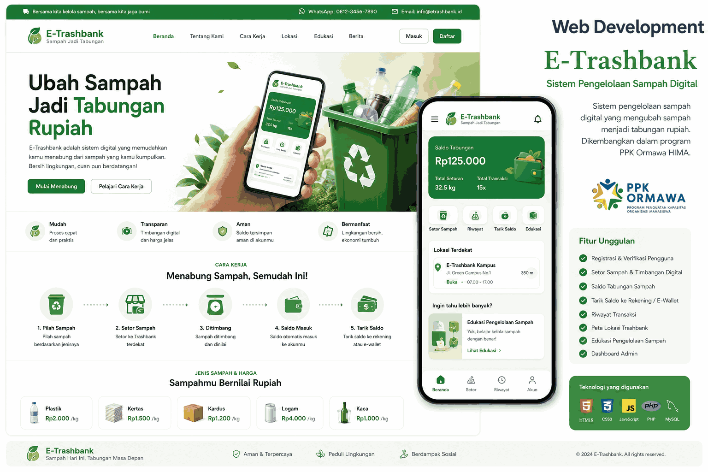

Kembali ke Proyek

Web Development
E-Trashbank
Sistem pengelolaan sampah digital yang mengubah sampah menjadi tabungan rupiah. Dikembangkan dalam program PPK Ormawa HIMA SI UNIKU.
Proyek ini dirancang dengan fokus pada efisiensi, keamanan, dan performa yang tinggi. Penggunaan teknologi modern memastikan bahwa solusi ini dapat di-scale dengan baik di masa depan. Selama proses pengembangannya, banyak tantangan teknis yang dipecahkan untuk menghadirkan pengalaman pengguna yang mulus dan stabil.
Teknologi yang Digunakan
PHP
MySQL
Bootstrap